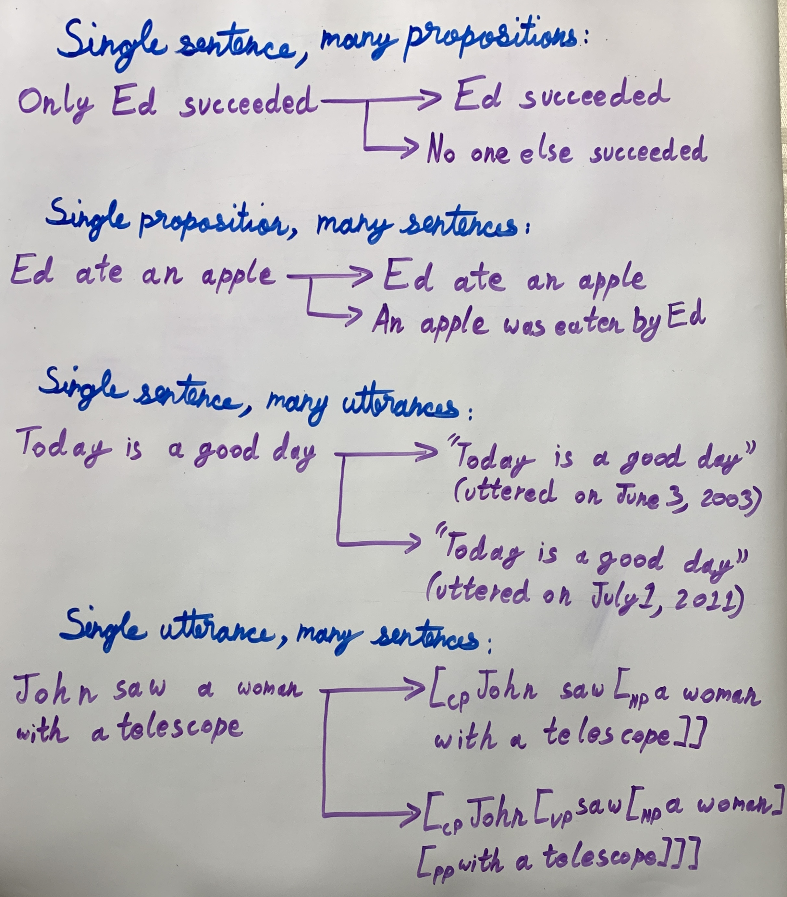
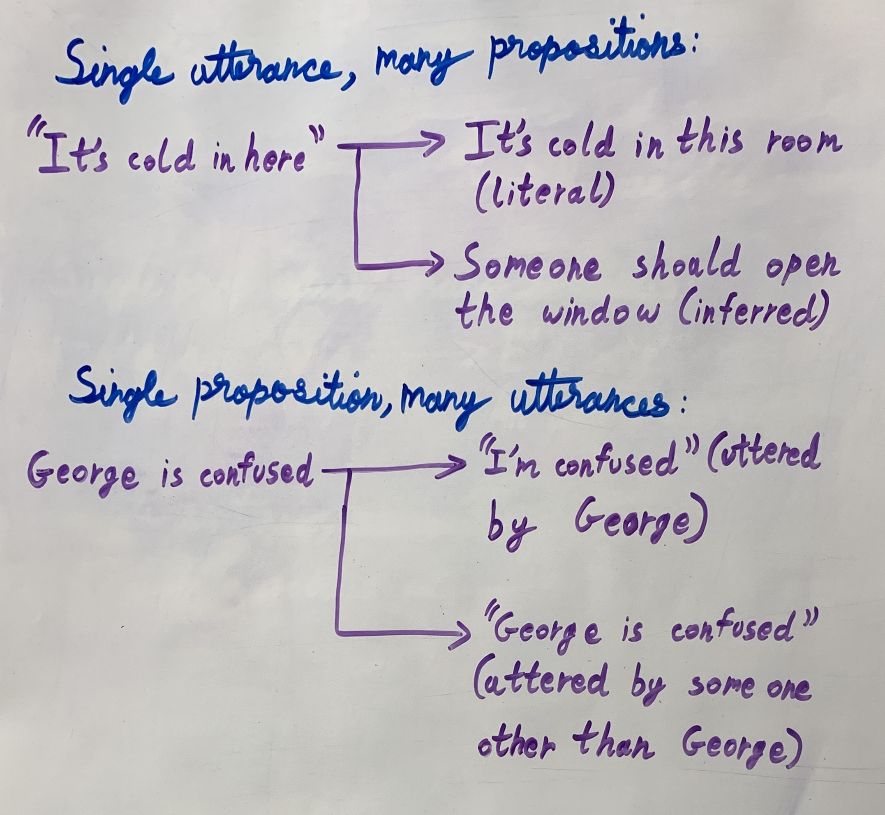

| Semantics is the study of the meaning of expressed by the elements of a language. The elements that contribute to the content of a linguistic expression can be syntactic (e.g., nouns, verbs, adjectives), morphological (e.g., tense, number), and even phonological (e.g., intonation, focus). | Pragmatics is the study of the meaning of a linguistic expression when it is used by a speaker in a context. |
| The division between semantics and pragmatics is often defined as the difference between literal meaning (what is said) and non-literal meaning (what is meant). | |
Two Kinds of Theory of Meaning
- I distinguish two topics: first, the description of possible languages or grammars as abstract semantic systems whereby symbols are associated with aspects of the world; and, second, the description of the psychological and sociological facts whereby a particular one of these abstract semantic systems is the one used by a person or population. Only confusion comes of mixing these two topics. - David Lewis
- What is the meaning of a linguistic expression? Semantic Theory of Meaning.
- What is it about an individual that gives a linguistic expression the particular meaning it has, rather than another? Foundational Theory of Meaning.
- A semantic theory describes meaning in terms of what linguistic expressions say about the world. A foundational theory explains why a meaning arises based on the predisposition of language users, their psychological or social states of being.
| What does it mean for a word to mean something? | |
|---|---|
|
|
A Referential of Theory of Meaning
- Reference is the relation between linguistic expressions (i.e., words and phrases) and things in the world.
- Two versions of Reference:
- The first version depends on a speaker and is therefore an instance of language use (Speaker X uses an expression Y to identify an entity Z) [performance].
- The second version is independent of speakers and reflects language knowledge (Expression Y identifies entity Z) [competence].
- John Stuart Mill:
- Mill made another important distinction. He denied that proper names have a connotation. He maintained that proper names are simply labels and therefore don't imply any particular properties. They simply denote the individual to which they are attached by virtue of being attached to that individual.
Reference is not enough Denotation: What an expression denotes is what it applies to in the world.
The denotation of the word dog includes all the entities in the world that are dogs or have been dogs, namely anything that can be called a dog.
The simplest ways to determine the denotation for an expression is through ostension, i.e., pointing out examples.Connotation: Necessary and sufficient properties that a term poses which determine its denotation.
The word dog connotes having four legs, having a tail, having a snout, having fur, being man's best friend, among other properties. Every entity that satisfies these properties is included in the denotation of the word dog.
Today, the word "connotation" implies that a word evokes an idea or feeling in addition to its literal meaning, due to political or social pressures. - Gottlob Frege:
- Frege proposed a number of similar observations to Mill but the two disagreed on the treatment of
proper names:
- a. Mark Twain is Mark Twain
- b. Mark Twain is Samuel Clemens
- The sentence "Mark Twain is Mark Twain" is self-evident. You can deduce that it is a true statement without knowing anything about the world. Statements of this kind are called analytic.
- The sentence "Mark Twain is Samuel Clemens" is not self-evident. It is informative. You cannot deduce that it is a true statement without knowing about the world. Statements of this kind are called synthetic.
- For Mill, however, (a) and (b) express exactly the same propositions because the proper names Mark Twain and Samuel Clemens are simply labels that refer to the same entity. This goes against native speaker intuitions.
- Propositional attitude: is the relation
between a person and a mental attitude towards a proposition:
- a. John believes Mark Twain wrote Huckleberry Finn
- b. John believes Samuel Clemens wrote Huckleberry Finn
- Frege observed that there is a clear difference between (a) and (b). It is easy to imagine a situation in which one of these is true and the other is false. Again, for Mill, because proper names simply denote, there is no difference in meaning between (a) and (b) because Mark Twain and Samuel Clemens refer to the same entity.
- Reference: What an expression refers to is what it applies to in the world.
- Sense: Mode of presentation of its referent. Each linguistic expression also has a sense which determines its reference. The proper name Aristotle refers to the well-known philosopher, so does the noun phrase the teacher of Alexander the Great. Each of these linguistic expressions refers to the same entity, however each one directs your attention in a different way.
- Principle of Compositionality: The meaning of a sentence is a function of the meaning of its parts and their syntactic structure.
- Frege's idea: the structure of the sentence serves as an image of the structure of the thought.
- Frege proposed a number of similar observations to Mill but the two disagreed on the treatment of
proper names:
Division Of Labour
- Sentences:
- A well-formed arrangement of words in a phrase (S/TP/CP).
- Linguistic expression, language specific, internalized (abstract).
- Propositions:
- The description of a possible state of affairs in the world, more like a claim than a fact.
- Logical expression (bears truth of falsity), object of an attitude, shareable.
- A native speaker's competence includes matching a linguistic expression (like a sentence) with the appropriate content (a proposition).
- Utterances:
- A sentence used in a context.
- Linguistic expression, language specific, externalized (concrete).
- Examples:

